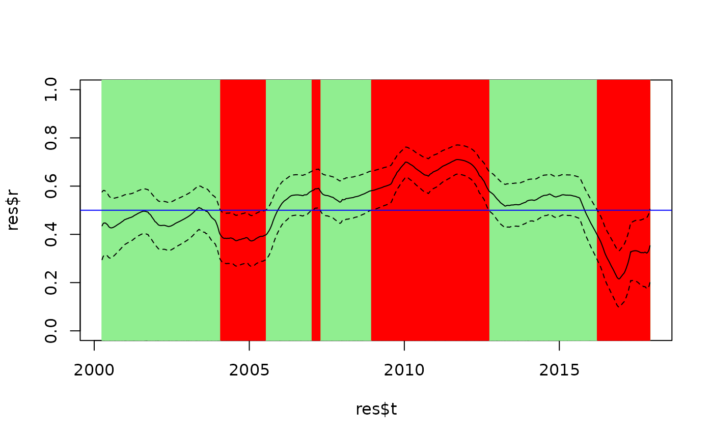

Test difference between correlation coefficient estimates and a value of reference
Source:R/ttest.R
ref_test.RdThis function tests whether smoothed correlation values are equal (H0) or not to a reference value (default = 0).
The test is not described in Choi & Shin, 2021, but it is based on the idea behind equality_test.
Arguments
- tcor_obj
the output of a call to
tcorwithCI = TRUE.- t
a vector of time point(s) used by the test (by default, all time points are considered).
- r_ref
a scalar indicating the reference value for the correlation coefficient to be used in the test (default =
0).- test
a character string indicating which test to use ("student", the default; or "chi2").
- p.adjust.methods
a character string indicating the method used to adjust p-values for multiple testing (see
p.adjust; default = "none").
Details
Two different test statistics can be used, one is asymptotically Student-t distributed under H0 and one is chi-square distributed. In practice, it seems to give very similar results.
Examples
## Comparison of all correlation values to reference of 0.5
res <- with(stockprice, tcor(x = SP500, y = FTSE100, t = DateID, h = 300, CI = TRUE))
ref <- 0.5
test_against_ref <- ref_test(res, r_ref = ref)
#> The bandwidth stored in `tcor_obj` and used by `ref_test()` has not been automatically selected but was set by the user. Rerun `tcor()` without specifying `h` if you want otherwise.
head(test_against_ref)
#> t r r_ref delta_r SE_delta_r T_stat df p
#> 1 2000-04-03 0.4354187 0.5 -0.06458131 0.07161311 -0.9018084 8650 0.3671838
#> 2 2000-04-04 0.4362800 0.5 -0.06372005 0.07142815 -0.8920859 8650 0.3723717
#> 3 2000-04-05 0.4370884 0.5 -0.06291158 0.07124627 -0.8830157 8650 0.3772523
#> 4 2000-04-06 0.4378701 0.5 -0.06212989 0.07106580 -0.8742587 8650 0.3820017
#> 5 2000-04-07 0.4386006 0.5 -0.06139941 0.07088820 -0.8661442 8650 0.3864351
#> 6 2000-04-10 0.4408871 0.5 -0.05911287 0.07059415 -0.8373622 8650 0.4024122
#> p_adjustment
#> 1 none
#> 2 none
#> 3 none
#> 4 none
#> 5 none
#> 6 none
## Plot to illustrate the correspondance with confidence intervals
plot(res$r ~ res$t, type = "l", ylim = c(0, 1), col = NULL)
abline(v = test_against_ref$t[test_against_ref$p > 0.05], col = "lightgreen")
abline(v = test_against_ref$t[test_against_ref$p < 0.05], col = "red")
points(res$r ~ res$t, type = "l")
points(res$upr ~ res$t, type = "l", lty = 2)
points(res$lwr ~ res$t, type = "l", lty = 2)
abline(h = ref, col = "blue")

## Test correlation of 0 a specific time points (using index or dates)
ref_test(res, t = c(100, 150))
#> The bandwidth stored in `tcor_obj` and used by `ref_test()` has not been automatically selected but was set by the user. Rerun `tcor()` without specifying `h` if you want otherwise.
#> t r r_ref delta_r SE_delta_r T_stat df p
#> 1 100 0.4321759 0 0.4321759 0.06039284 7.156078 8650 8.979024e-13
#> 2 150 0.4483478 0 0.4483478 0.05536091 8.098635 8650 6.313458e-16
#> p_adjustment
#> 1 none
#> 2 none
ref_test(res, t = c("2000-08-18", "2000-10-27"))
#> The bandwidth stored in `tcor_obj` and used by `ref_test()` has not been automatically selected but was set by the user. Rerun `tcor()` without specifying `h` if you want otherwise.
#> t r r_ref delta_r SE_delta_r T_stat df p
#> 1 2000-08-18 0.4300012 0 0.4300012 0.06110005 7.037657 8650 2.104015e-12
#> 2 2000-10-27 0.4455035 0 0.4455035 0.05609660 7.941720 8650 2.243738e-15
#> p_adjustment
#> 1 none
#> 2 none